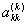

3.2.2.2. Pivot İşlemiGauss eleme yöntemi incelendiğinde, uygulamada bir sorunun ortaya çıkabileceği hemen anlaşılır. Köşegen üzerinde bulunan  elemanının sıfır yada çok küçük olması sorun yaratacaktır. Söz konusu köşegen elemana “pivot eleman” adını veriyoruz. Pivot eleman sıfır veya çok küçük bir sayısal değer ise, denklem sisteminde pivot eleman en büyük olacak biçimde denklem satırları arasında yer değiştirme işlemi yapılır.
Yani, yukarıdaki gibi olacak biçimde en küçük p>k tamsayısı belirlenir ve ardından köşegenleştirme işlemine devam edilir. Sadece pivot elemanın büyük yapılması durumuna “kısmi pivotlama”, bütün satırlar dikkate alınarak büyük elemanların seçilmesi durumuna ise “tam pivotlama” adı verilir. |